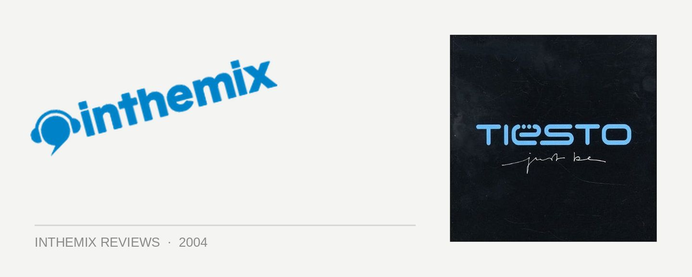

Tiesto - Just Be
(Magik Muzik/Central Station)
Being crowned as the world’s #1 DJ two years in a row is nothing to be scoffed at - and none other than Dutch trance god Tiesto can boast to having achieved this major feat. And while it seems like everyone is waiting for trance to vanish like yesterday’s trend, it is the unique and forward thinking approach of figures like Tiesto who have been responsible for keeping the sound alive. Following on from his debut In My Memory from two years ago, Tiesto’s new studio album Just Be shows him to be a producer with a grasp of musicality that goes beyond simply twiddling with computer knobs – with each and every song touched with that famous Tiesto love.
One of the biggest changes in Just Be is the addition of an orchestra to the established grandiose nature of Tiesto’s trance sound - and it’s used to slightly embarrassing effect on the opening track Forever Today. While some will warm to the stripped back orchestral grandeur of the album’s introduction, others may find themselves puking into their trucker caps. But never fear, because Tiesto’s dabbling in orchestral work is used to better effect elsewhere on the album, particularly on the singles Traffic and Love Comes Again. In both cases Tiesto has created a soaring trance-scape of epic proportions: the trademark uplifting synths are present, but they are complimented by subtle techy and progressive elements that remind us why he remains a step ahead of most everyone else in the global trance scene. And the strings are magnificent: filtered and overlapped beautifully through synthesizers, they add another logical dimension to the trance sound.
When listening to anything produced by Tiesto, it’s obvious why he inspires so much rabid devotion in his fanbase – it’s the emotion he injects into his music. While this sincerity makes his detractors cringe with embarrassment, to his followers it makes him something close to a god. This notion of heartfelt emotion is taken even further on Just Be: while the album opens with a bang, the tracks that follow allow him to experiment with some slower sounds. Supported by guest vocalists on many of his less traditional offerings, they could be adequately described as mellow pop with substance to spare. Not too dissimilar from the material of Tiesto’s classic remix partners Delirium - but infused of course with his trademark edge of progressive and tech. An ability to blend the darker electronic elements with sweetness and melody has always been a big part of his sound, but he takes it even deeper on Just Be. While the mood is again lifted to the level of club euphoria with a new take on Adagio for Strings at the end, the album is more defined by the rich, majestic and emotional sounds of A Tear In the Open.
While Tiesto today reigns supreme as the world’s #1 DJ, it’s easy to forget that he was once considered just another Dutch DJ/producer living in the shadow of Ferry Corsten. He managed to transcend that status by making a name for himself with a very unique sound: grandiose and accessible trance, yet further defined by a strong progressive influence, a touch of tech, and an accomplished grasp of melody and structure. None of it could be pigeonholed as straight Dutch trance - not the type you hear played all over commercial radio at least. But Tiesto is preaching to the converted with Just Be: it’s not exactly going to bring new fans into the fold, and the bombastic European nature of it all will surely irritate some. But Tiesto fans will find plenty to love here: to them he’s earned his #1 status not only as a DJ, but through his continued ability to deliver unique sounds as an accomplished producer.